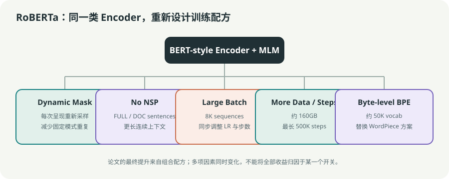

1. 论文真正问了什么
在 2019 年前后的预训练模型比较中，模型架构、训练目标、语料规模、训练步数和调参预算经常同时变化。若一个新模型胜过 BERT，很难判断提升来自架构创新，还是来自更大的训练预算和更充分的调参。
RoBERTa 的研究策略是尽量固定 BERT-Large 风格的 Encoder 架构，逐项检查训练流程。论文摘要总结了四类主要改动：更长训练、更大 batch、更多数据；移除 NSP；训练更长序列；动态改变 masking pattern。它还评估了 byte-level BPE。

2. 四项训练改动分别改变了什么
- Dynamic masking：原始 BERT 在预处理阶段生成固定遮盖副本；RoBERTa 在每次呈现样本时重新生成遮盖模式。
- 移除 NSP 并重新组织输入：不再使用二分类 NSP loss，同时从文档中连续抽取句子填充更长序列。
- 更大的 batch：论文比较 256、2K、8K 序列 batch，并按计算预算调整训练步数和学习率。
- 更多数据和更长训练：从 BookCorpus + Wikipedia 扩展到包含新闻、网页和故事的 160GB 文本，并把预训练延长到 500K steps。
这几项是组合配方，不应拆成“每个组件独立贡献多少分”的结论，除非引用对应的消融实验。尤其数据量与数据多样性在 RoBERTa 的最终实验中同时变化，论文也明确说明二者没有完全解耦。
3. 动态遮盖的证据：相当或略优，不是魔法增益
RoBERTa Table 1 对 BERT-Base 重实现比较 static 与 dynamic masking，报告 SQuAD 2.0 F1、MNLI-m accuracy 和 SST-2 accuracy。静态遮盖结果分别为 78.3、84.3、92.5；动态遮盖为 78.7、84.0、92.9。论文结论是动态遮盖与静态遮盖表现相当或略好，并且在更长训练与大数据场景中更方便。
| 遮盖方式 | SQuAD 2.0 F1 | MNLI-m Accuracy | SST-2 Accuracy |
|---|---|---|---|
| Static | 78.3 | 84.3 | 92.5 |
| Dynamic | 78.7 | 84.0 | 92.9 |
这些是论文 Table 1 的开发集结果，取 5 个随机初始化的中位数。它们不是所有任务都一致上升的证明，也不是可以脱离模型、训练预算和数据条件的普遍收益。
4. 移除 NSP 不是只删一个 loss：输入格式也变了
RoBERTa 比较四种样本组织方式：SEGMENT-PAIR+NSP（接近原始 BERT）；SENTENCE-PAIR+NSP（自然句对，序列更短）；FULL-SENTENCES（连续完整句子打包，可跨文档，跨文档时插入额外 separator，不使用 NSP）；DOC-SENTENCES（连续完整句子打包，但不跨文档，也不使用 NSP）。
论文 Table 2 的控制实验显示，句子级短 pair 会损害一些任务表现；去掉 NSP 的 FULL-SENTENCES 与 DOC-SENTENCES 与或略好于原始 BERT-Base。DOC-SENTENCES 在一些任务略好，但因为文档末尾会产生较短序列、batch 需要动态调整，作者后续采用 FULL-SENTENCES 以便比较和训练。
5. Batch、数据与训练步数：不要只看一个数字
RoBERTa 论文 Table 4 对 BERT-Large 与不同训练阶段的 RoBERTa-Large 做开发集比较。其数据规模和训练步数是逐行累积变化的：
| 配置 | 预训练文本 | Batch | Steps | SQuAD 1.1 / 2.0 F1 | MNLI-m | SST-2 |
|---|---|---|---|---|---|---|
| BERT-Large | 13GB（清洗后的 Books + Wiki） | 256 | 1M | 90.9 / 81.8 | 86.6 | 93.7 |
| RoBERTa-Large · Books + Wiki | 16GB | 8K | 100K | 93.6 / 87.3 | 89.0 | 95.3 |
| + additional data | 160GB | 8K | 100K | 94.0 / 87.7 | 89.3 | 95.6 |
| + longer training | 160GB | 8K | 300K | 94.4 / 88.7 | 90.0 | 96.1 |
| + longer training | 160GB | 8K | 500K | 94.6 / 89.4 | 90.2 | 96.4 |
注意两个容易忽略的细节。第一，Table 4 报告的是开发集结果，SQuAD 列为 F1，MNLI-m 和 SST-2 为 accuracy；不能把它们写成测试集排行榜成绩。第二，BERT 原论文报告 BooksCorpus + Wikipedia 共 16GB 未压缩文本；RoBERTa 的重实现说明清洗后同一组合约 13GB，因此表中 BERT-Large 行写 13GB。它们不是简单的数据量矛盾。
160GB 语料由五个英文来源构成：BooksCorpus + English Wikipedia 约 16GB，CC-News 约 76GB，OpenWebText 约 38GB，Stories 约 31GB。CC-News 是从 CommonCrawl News 提取的新闻文章。数据量与来源多样性一起增加，论文明确指出这两项没有被完全独立控制。
若把每次更新处理的 token 数作为比较单位，可用 做一阶估算。它比单独比较“batch 有多少条序列”更能反映长度差异，但还没有包含 padding、packing 和动态 batch 的影响。
6. GLUE 与 SQuAD：必须区分开发集与测试集
RoBERTa Table 5 同时列出 single-task dev 与 ensemble test 两种设置。开发集行是 5 个随机种子的中位数；测试集行来自 GLUE leaderboard，RoBERTa 采用每个任务 5–7 个模型集成。其 88.5 的 GLUE average 属于 leaderboard 测试集的集成结果，不应与 Table 5 上方的单模型开发集结果混为一谈。
在 SQuAD 上，RoBERTa 论文 Table 6 报告 single model dev：SQuAD 1.1 EM/F1 为 88.9/94.6，SQuAD 2.0 EM/F1 为 86.5/89.4；测试集另列为 86.8/89.8（SQuAD 2.0）。论文强调 RoBERTa 只用 SQuAD 自身训练数据，没有像一些先前方法那样增加额外 QA 数据。
这也解释为什么不能直接拿 RoBERTa 的 88.5 GLUE leaderboard average 与 BERT 表 1 的 82.1 八项开发集平均值做同口径比较：数据切分、任务覆盖、是否集成和提交时间均不同。
7. Byte-level BPE：文本编码也变了
RoBERTa 使用约 50K 的 byte-level BPE 词表，不需要 BERT BasicTokenizer 那套启发式预处理。以 byte 为底层单元，可以编码任意输入字节序列而不引入未知 token。它与 BERT 原始约 30K WordPiece 词表的 tokenization 规则不同，不能把同一个 input ID 或子词切分结果跨 checkpoint 复用。
这项变化也有代价：词表更大，embedding 参数增加；而且在论文早期实验中，byte-level BPE 对部分任务的表现略低于原始编码。作者仍采用它，理由是通用编码方案的工程优势。它不是“换成 BPE 后所有任务必然更好”。
8. 结论边界：RoBERTa 是一套训练配方，不是新的注意力公式
- RoBERTa 保留 BERT-Large 风格的 Encoder 主体和 MLM 目标，主要贡献是系统训练策略。
- 动态遮盖的单独消融提升有限，但对大数据和长训练更方便。
- 移除 NSP 与 FULL/DOC sentence packing 一起改变，不能孤立解释为一个 loss 的效果。
- 数据规模、训练步数和 batch 同时改变；最终收益不能全部归于某一个因素。
- 论文表格中的 dev、test、single、ensemble、external data 条件必须分别标注。
9. 交互：拆解 RoBERTa 配方
选择一个改动
观察该改动针对 BERT 训练流程的哪个环节。
改变：每次样本进入模型时重新采样遮盖位置。 解决的问题：离线固定 mask 组合有限，长训练时会重复看到相同遮盖模式。 证据：RoBERTa Table 1 显示 dynamic 与 static 表现相当或略好。 边界：不是所有单项任务都出现大幅提升。
10. 交互二：训练预算阶梯账本
固定引用 RoBERTa 论文的数字，切换状态核对表格口径。所有指标均为论文 Table 4 的开发集结果，不是测试集排行榜成绩；本交互不做任何重新训练。
预算：batch / 步数 / 语料
数字来自 RoBERTa Table 3、Table 4 与 §4.1，仅做口径核对。
Table 3 比较 256、2K、8K 序列 batch，并按预算调节步数与学习率。 Table 4 的 RoBERTa-Large 行统一使用 8K batch。 每步序列数 8K/256=32×，但这不等于 32× 端到端加速或 32× 有效 token。
“每次 update 处理的 token 数”可用 B×L_avg 做一阶估算，在 examples/finetuning_contract_lab.py 的 tokens_per_update 中实现，并由对应单测断言；它未包含 padding 与 packing 的影响。
关键结论
- RoBERTa 保留 BERT 风格 Encoder 与 MLM，主要重新优化数据、mask、输入打包、batch 和训练时长。
- 原始 BERT 的 mask 在预处理阶段生成并通过 dupe_factor 扩充；RoBERTa 在每次呈现样本时动态生成。
- RoBERTa 的 FULL-SENTENCES/DOC-SENTENCES 与移除 NSP 同时改变输入组织，不能只归因于删除一个 loss。
- 论文 Table 4 是开发集结果；GLUE 88.5 是 leaderboard test ensemble average，必须标明评测口径。
原始资料与延伸阅读
- Liu et al., RoBERTa: A Robustly Optimized BERT Pretraining Approach, §3.2、§4.1–4.4、Tables 1–5、Appendix Tables 8–10。
- Devlin et al., BERT, §3.1 and Appendix A.2。
- Gokaslan & Cohen, OpenWebText Corpus。